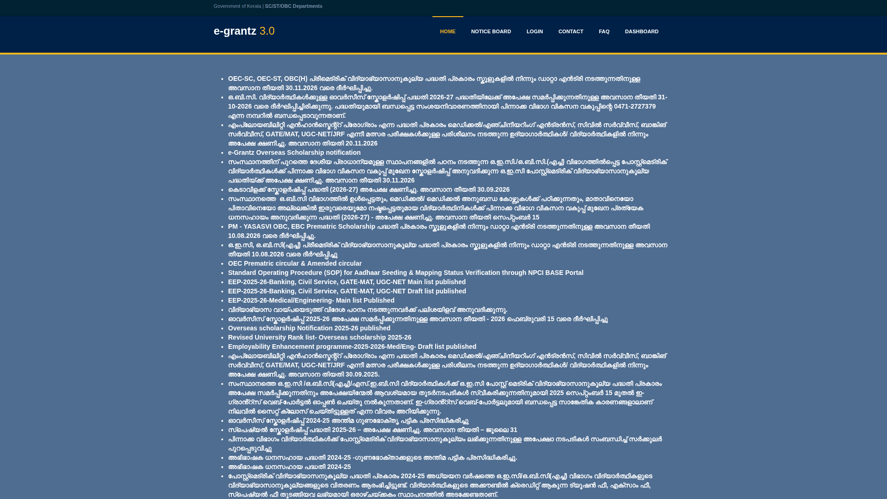

OEC Pre-Matric Education Assistance 2026-27: ₹320 to ₹940 for classes 1-10, school data entry by 30 November
The e-grantz notice board has extended the last date for the OEC Pre-Matric Educational Assistance scheme 2026-27: schools must finish entering eligible students' details by 30 November 2026. The scheme, run by the Kerala Backward Classes Development Department, pays a yearly lump sum of ₹320 to ₹940 to OEC-SC, OEC-ST and OBC(H) students studying in classes 1 to 10. There is no form for parents or students to fill: the school does the online entry. If your child belongs to one of these communities, ask the school office or the teacher in charge of e-grantz before 30 November.
At a glance
- What: OEC Pre-Matric Educational Assistance 2026-27 from the Kerala Backward Classes Development Department; a yearly lump-sum education grant
- Who: students in classes 1 to 10 from OEC-SC, OEC-ST and OBC(H) communities, in government, aided, recognised unaided, CBSE or ICSE affiliated schools (the department's scheme description also covers Kendriya Vidyalayas)
- Amount: ₹320 (classes 1-4), ₹630 (classes 5-7) or ₹940 (classes 8-10) a year
- Income limit: none for OEC communities; up to ₹6 lakh a year for the other equivalent communities on the scheme list
- How it reaches the student: no student application; the school enters the student's details online and the amount is paid by Direct Benefit Transfer
- Last date: 30 November 2026 for schools to complete data entry, as extended on the e-grantz notice board
How much, by class
From the department's official scheme page, read on 10 November 2026. This is a lump sum paid once a year:
- Classes 1-4: ₹320
- Classes 5-7: ₹630
- Classes 8-10: ₹940
Who is covered
- Students in classes 1 to 10 whose community is on the scheme's OEC-SC, OEC-ST or OBC(H) lists. The department publishes the community lists on its scheme page.
- The school must be a government, aided, recognised unaided, CBSE or ICSE affiliated school in Kerala; the scheme description also includes Kendriya Vidyalayas.
- Income limit: none for OEC communities. For the other equivalent communities selected for the OEC educational benefit, family income must be within ₹6 lakh a year.
- Do not read this as a benefit for every OBC student: it applies only to the specific communities on the scheme lists, so confirm your child's community is included, through the school.
What parents should do
Checked on the e-grantz portal and the department's scheme page on 10 November 2026:
- Contact your child's school office, or the teacher in charge of e-grantz, and ask whether your child's details have been entered for the OEC Pre-Matric Educational Assistance 2026-27.
- Do this well before 30 November 2026. That date is the schools' data-entry deadline on the e-grantz notice board, so schools may finish their entry earlier.
- Keep the student's Aadhaar and bank account details ready if the school asks; the assistance is paid by Direct Benefit Transfer to the student's account.
- For doubts, the department's regional offices handle this scheme. The Backward Classes Development Department's contact number on the e-grantz portal is 0471-2727378.

Keep these limits in mind
- This is a small yearly grant, not a full scholarship: ₹320 to ₹940 depending on the class.
- Everything runs through the school. A parent cannot submit an application on the portal for this scheme.
- The 30 November 2026 date is the schools' data-entry deadline, not a student application deadline, so the practical last day to ask the school is earlier.
- Only the communities on the scheme's OEC-SC, OEC-ST and OBC(H) lists are covered. Other OBC students are not automatically eligible.
- We read the public notice board and the scheme page; we did not log in, and nothing was submitted or paid.
Frequently asked questions
Can I apply online myself? No. The department's scheme page says students do not submit a separate application; school authorities make the online entry within the prescribed time.
Is this for all OBC students? No. It covers the specific communities on the scheme's OEC-SC, OEC-ST and OBC(H) lists. Confirm through the school whether your child's community is included.
How much is the assistance? ₹320 a year for classes 1-4, ₹630 for classes 5-7 and ₹940 for classes 8-10, paid as a lump sum.
What is the last date? The e-grantz notice board extends the schools' data-entry last date to 30 November 2026. Ask the school office well before that.
Source: the e-grantz 3.0 portal notice board, whose top line extends the OEC-SC, OEC-ST, OBC(H) pre-matric data-entry last date to 30.11.2026, and the Backward Classes Development Department's official OEC Prematric Educational Assistance scheme page, which lists the amounts, income limit and covered school types. Checked on the live pages on 10 November 2026. This is an AiCoN explainer, not a Kerala government publication.